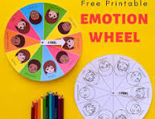

Helping children understand and manage their emotions is one of the most important skills they can develop. This guide provides practical tools and insights to support emotional regulation at home.
What is Emotional Regulation?
Emotional regulation is the ability to recognize, understand, and manage emotions in healthy ways. It helps children cope with stress, frustration, excitement, and disappointment all part of daily life.

Signs of Poor Emotional Regulation
Meltdowns over small issues
Difficulty calming down after being upset
Aggressive or impulsive behavior
Withdrawal or shutting down during emotional moments
Frequent tantrums beyond expected age ranges
Strategies to Support Emotional Regulation
Teach Emotion Vocabulary: Use words like frustrated, excited, scared, or disappointed to help your child label feelings.
Model Calm Behavior: Children learn from watching adults. Stay calm during conflicts and show how you handle stress.
Create a Calm-Down Space: Designate a quiet area where your child can go to self-soothe when overwhelmed.
Practice Breathing Exercises: Try belly breathing or balloon breaths together when things are calm so it becomes a familiar tool.
Use Social Stories: Books or short stories that explain how to handle specific situations (e.g., losing a game).
Age-Appropriate Tips
Young Children (Ages 3 to 7): Use emotion faces charts, role-play, and simple mindfulness activities.
Older Kids (Ages 8 to 12): Encourage journaling, teach problem-solving steps, and talk about coping strategies.
Teens: Focus on active listening, respect their privacy, and encourage physical activity or creative outlets.
Video: Helping Kids Regulate Emotions
Quick Tip
Do not try to fix everything right away. Sometimes just being present, giving a hug, or saying, I am here for you, makes the biggest difference.